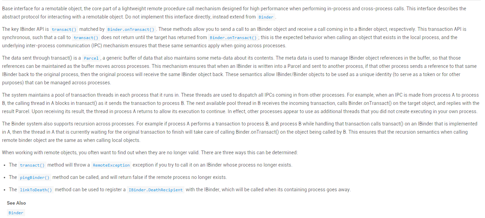
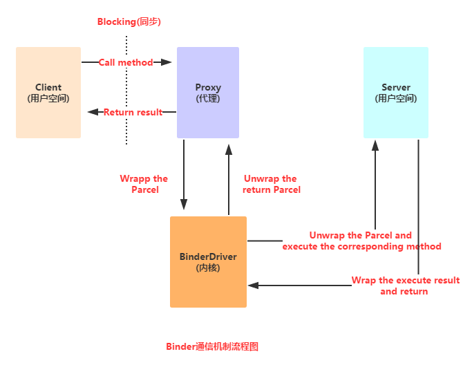
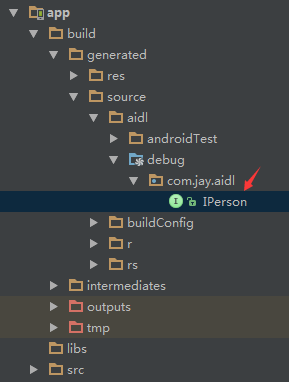
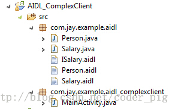
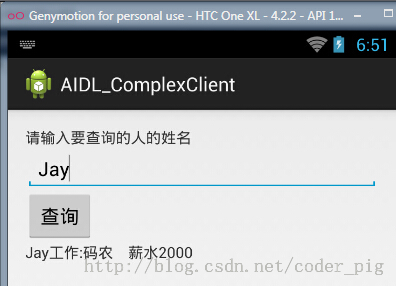
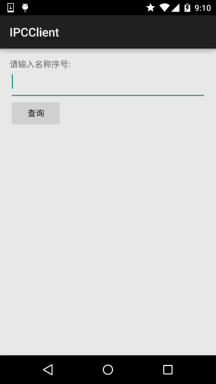
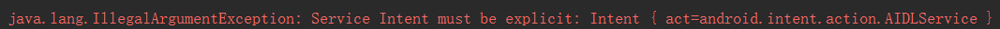
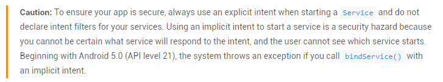

この節の導入：
この節では、引き続きService（サービス）コンポーネントについて研究します。この節では、AndroidのAIDLプロセス間通信のいくつかの概念を学びます。ソースコードのレベルには深く立ち入らず、とりあえずそれが何かを知って、使えれば十分です！それではこの節の内容を始めましょう。 この節に対応する公式ドキュメント：Binder
1. Binderメカニズム初歩
1）IBinderとBinderって何者？
公式ドキュメントがどう言っているか見てみましょう：

日本語訳：
IBinderはリモートオブジェクトの基本インターフェースであり、高性能のために設計された軽量なリモート呼び出しメカニズムの中核部分です。しかし、リモート呼び出しだけでなく、プロセス内呼び出しにも使用されます。このインターフェースは、リモートオブジェクトと対話するためのプロトコルを定義します。ただし、このインターフェースを直接実装するのではなく、継承(extends)Binder。
IBinderの主要なAPIはtransact()、それに対応するAPIはBinder.onTransact()です。前者を使うと、リモートのIBinderオブジェクトに呼び出しを送信でき、後者によってリモートオブジェクトは受け取った呼び出しに応答できます。IBinderのAPIはすべてSyncronous（同期）で実行されます。例えばtransact()相手のメソッド呼び出しが完了するまでBinder.onTransact()戻りません。プロセス内で呼び出しが発生する場合は確かにこのようになりますが、プロセス間の場合は、IPCBinderの助けを借りても同じ効果です。
を通じてtransact()送信されるデータはParcel、Parcelは一般的なバッファであり、データの他にその内容を記述するメタデータも含んでいます。メタデータはIBinderオブジェクトの参照を管理するために使用され、これによりバッファがプロセスからプロセスへ移動する際にこれらの参照を保存できます。これにより、あるIBinderがParcelに書き込まれて別のプロセスに送信されたとき、もし別のプロセスが同じIBinderの参照を元のプロセスに送り返すと、元のプロセスは送信したそのIBinderの参照を受け取ることができます。このメカニズムにより、IBinderとBinderはプロセス間で一意の識別子のように管理されます。
システムは各プロセスに対して、インタラクションスレッドを格納するスレッドプールを維持しています。これらのインタラクションスレッドは、他のプロセスから送信されたすべてのIPC呼び出しを配送するために使用されます。例えば、IPCがプロセスAからプロセスBに送信されると、Aの中でその呼び出しを発信したスレッド（これはスレッドプールにはないはずです）はブロックされtransact()た状態になります。Binder.onTransact()プロセスBのインタラクションスレッドプール内の1つのスレッドがこの呼び出しを受信し、それを呼び出し
、完了後にParcelを使って結果として返します。その後、プロセスAで待機していたスレッドは、返されたParcelを受け取った後、実行を続行できます。実際には、別のプロセスは現在のプロセスの1つのスレッドのように見えますが、現在のプロセスによって作成されたものではありません。
リモートオブジェクトを操作するとき、それらが有効かどうかを確認する必要がよくあります。使用できる方法は3つあります：
- 1. transact()メソッドは、IBinderが存在するプロセスが存在しない場合にRemoteException例外をスローします。
- 2. ターゲットプロセスが存在しない場合、pingBinder()を呼び出すとfalseが返ります。
- 3. linkToDeath()メソッドを使ってIBinderにIBinder.DeathRecipientを登録できます。これはIBinderが表すプロセスが終了したときに呼び出されます。
PS: 翻訳は以下から引用：Android開発：IBinderとは
さて、上記の一連の内容を読み終えても、おそらく頭が混乱しているかもしれません。ここで簡単にまとめます：
IBinderはAndroidが私たちに提供するプロセス間通信用のインターフェースであり、通常はこのインターフェースを直接実装するのではなく、 Binderクラスを継承してプロセス間通信を実装します！これはAndroidでIPC（プロセス間通信）を実現する方法の1つです！
2）Binderメカニズムの簡単な分析
AndroidのBinderメカニズムは一連のシステムコンポーネントで構成されています：Client、Server、Service Manager、Binderドライバ
おおよその呼び出しフローは以下の通りです。また、Service Managerは複雑なので、ここでは詳しく研究しません！

フロー解析：
->Clientが何らかのプロキシインターフェースのメソッドを呼び出すと、プロキシインターフェースのメソッドはClientから渡されたパラメータをParcelオブジェクトにパッケージ化します；
->その後、プロキシインターフェースはそのParcelオブジェクトをカーネル内のBinderドライバに送信します；
->その後、ServerはBinder Driver内のリクエストデータを読み取ります。もし自分宛てに送信されたものであれば、Parcelオブジェクトを解包し、処理して結果を返します；
PS：プロキシインターフェースで定義されたメソッドとServerで定義されたメソッドは一対一に対応しています。また、呼び出しプロセス全体は同期であり、つまりServerが処理している間、ClientはBlock（ロック）されます！そして、ここで言うプロキシインターフェースの定義とは、後で説明するAIDL（Androidインターフェース記述言語）！
3）なぜAndroidはプロセス間通信にBinderメカニズムを使用するのか？
- 信頼性：モバイルデバイスでは、通常、Client-Serverベースの通信方式を採用して、インターネットとデバイス間の内部通信を実現します。現在LinuxがサポートするIPCには、従来のパイプ、System V IPC（メッセージキュー/共有メモリ/セマフォ）、およびsocketが含まれますが、Client-Server通信方式をサポートするのはsocketだけです。Androidシステムは開発者に豊富なプロセス間通信の機能インターフェースを提供しています。メディア再生、センサー、ワイヤレス転送などです。これらの機能はすべて異なるserverによって管理されています。開発者は自分のアプリケーションのclientとserverの通信を確立することだけを気にすれば、このサービスを利用できます。疑いなく、底层にClient-Server通信を実現するためのプロトコルを構築すると、システムの複雑さが増します。リソースが限られたスマートフォンでこのような複雑な環境を実装する場合、信頼性は保証しにくいです。
- 伝送性能：socketは主にネットワークを越えたプロセス間通信と同一ホスト上のプロセス間通信に使用されますが、伝送効率が低く、オーバーヘッドが大きいです。メッセージキューとパイプはストアアンドフォワード方式を採用しています。つまり、データはまず送信側のバッファからカーネルが開設したバッファにコピーされ、その後カーネルバッファから受信側のバッファにコピーされます。その過程で少なくとも2回のコピーがあります。共有メモリはコピーが不要ですが、制御が複雑です。各種IPC方式のデータコピー回数を比較すると、共有メモリ：0回。Binder：1回。Socket/パイプ/メッセージキュー：2回。
- 安全性：Androidはオープンなプラットフォームであるため、アプリケーションの安全性を確保することが非常に重要です。AndroidはインストールされたすべてのアプリケーションにUID/PIDを割り当てます。そのうちプロセスのUIDはプロセスIDを識別するために使用できます。従来はユーザーがデータパケット内にUID/PIDを記入するだけだったため、信頼性が低く、悪意のあるプログラムに悪用されやすいです。しかし、私たちはカーネルが信頼できるUIDを追加することを要求します。そのため、信頼性、伝送性、安全性の観点から、Androidは新しいプロセス間通信方式を確立しました。――出典：AndroidにおけるBinderメカニズムの簡単な理解
もちろん、初級開発者として私たちは上記のことを気にしません。Binderメカニズムが私たちにもたらす最も直接的な利点は次のとおりです：私たちは底层がどのように実装されているかを気にする必要はありません。AIDLのルールに従って、独自のインターフェースファイルを定義し、 その後、インターフェース内のメソッドを呼び出せば、2つのプロセス間の通信を完了できます！
2. AIDL使用詳細解説
1）AIDLとは？
えへへ、先ほど説明したIPCこの用語の正式名称は次のとおりです：プロセス間通信（interprocess communication）、なぜなら、Androidシステムでは、各アプリケーションが自分のプロセス内で実行されており、プロセス間では通常、直接データ交換ができないからです。そして、プロセス間通信を実現するために、Androidは前述のBinderメカニズムを提供しています。このメカニズムが使用するインターフェース言語は次のとおりです：AIDL(Android Interface Definition Language) は構文が非常に簡単で、このインターフェース言語は実際のプログラミング言語ではなく、単に2つのプロセス間の通信インターフェースを定義するだけです！そして、通信プロトコルに準拠したJavaコードを生成するのは、Android SDKのplatform-toolsディレクトリ内のaidl.exeツールによって生成され、対応するインターフェースファイルはgenディレクトリの下に生成されます。一般的にはXxx.javaというインターフェースです！そしてそのインターフェース内には、Stubの内部クラスがあり、そのクラス内ではIBinderインターフェースとカスタム通信インターフェースを実装しています。このクラスはリモートServiceのコールバッククラスとして使用されます。IBinderインターフェースを実装しているため、ServiceのonBind()メソッドの戻り値として使えます！
2）AIDLによる2つのプロセス間の簡単な通信の実現
AIDLインターフェースファイルの作成を始める前に、AIDLを書く際の注意事項をいくつか理解しておきましょう：
AIDLの注意事項：
- インターフェース名はaidlファイル名と同じである必要があります。
- インターフェースとメソッドの前にはアクセス修飾子を付けないでください。public、private、protectedなどは使えません。また、static finalも使えません！
- AIDLがデフォルトでサポートする型には、以下が含まれます：Javaの基本型，String，List，Map，CharSequenceそれ以外の型はすべてimport宣言が必要です。カスタム型をパラメータや戻り値として使用する場合、カスタム型はParcelableインターフェースを実装する必要があります。詳細は後述の「複雑なデータ型の受け渡し」を参照してください。
- カスタム型とAIDLで生成された他のインターフェース型は、aidl記述ファイル内で明示的にimportする必要があります。たとえそのクラスが定義されたパッケージと同じパッケージ内にある場合でも同様です。
また、aidlを書くために使うコンパイラがEclipseの場合、注意してください：直接new fileで作成しないでください！そうするとファイルを開けず、コードを書くことができません！
① まずtxtファイルを新規作成し、内容を書いた後、.aidl形式で保存し、対応するパスにコピーします。
② aidlはインターフェースと似ているので、直接new interfaceで作成し、内容を書いたら、対応するjavaファイルがあるディレクトリに移動してファイルの拡張子を変更します。Android Studioを使用する場合、Eclipseとは異なります。Eclipseと同じようにAIDLファイルを作成すると、対応するXXX.javaファイルがコンパイル生成されないことがわかります。ASでAIDLを作成するには、mainディレクトリの下にaidlフォルダを新規作成し、aidlのパッケージ名と同じパッケージを定義し、最後にaidlファイルを作成して、ctrl + f9で再コンパイルすればOKです。
上記の2つの方法で正常にコンパイルされた結果は以下のとおりです。それぞれ対応するディレクトリで対応するAIDLファイルを見つけることができます。



1. サーバー側：
Step 1：AIDLファイルを作成：
IPerson.aidl
package com.jay.aidl;
interface IPerson {
String queryPerson(int num);
}
IPerson.javaを開いて、その中のコードを見てみましょう：
IPerson.java
/*
* This file is auto-generated. DO NOT MODIFY.
* Original file: C:\\Code\\ASCode\\AIDLServer\\app\\src\\main\\aidl\\com\\jay\\aidl\\IPerson.aidl
*/
package com.jay.aidl;
public interface IPerson extends android.os.IInterface
{
/** Local-side IPC implementation stub class. */
public static abstract class Stub extends android.os.Binder implements com.jay.aidl.IPerson
{
private static final java.lang.String DESCRIPTOR = "com.jay.aidl.IPerson";
/** Construct the stub at attach it to the interface. */
public Stub()
{
this.attachInterface(this, DESCRIPTOR);
}
/**
* Cast an IBinder object into an com.jay.aidl.IPerson interface,
* generating a proxy if needed.
*/
public static com.jay.aidl.IPerson asInterface(android.os.IBinder obj)
{
if ((obj==null)) {
return null;
}
android.os.IInterface iin = obj.queryLocalInterface(DESCRIPTOR);
if (((iin!=null)&&(iin instanceof com.jay.aidl.IPerson))) {
return ((com.jay.aidl.IPerson)iin);
}
return new com.jay.aidl.IPerson.Stub.Proxy(obj);
}
@Override public android.os.IBinder asBinder()
{
return this;
}
@Override public boolean onTransact(int code, android.os.Parcel data, android.os.Parcel reply, int flags) throws android.os.RemoteException
{
switch (code)
{
case INTERFACE_TRANSACTION:
{
reply.writeString(DESCRIPTOR);
return true;
}
case TRANSACTION_queryPerson:
{
data.enforceInterface(DESCRIPTOR);
int _arg0;
_arg0 = data.readInt();
java.lang.String _result = this.queryPerson(_arg0);
reply.writeNoException();
reply.writeString(_result);
return true;
}
}
return super.onTransact(code, data, reply, flags);
}
private static class Proxy implements com.jay.aidl.IPerson
{
private android.os.IBinder mRemote;
Proxy(android.os.IBinder remote)
{
mRemote = remote;
}
@Override public android.os.IBinder asBinder()
{
return mRemote;
}
public java.lang.String getInterfaceDescriptor()
{
return DESCRIPTOR;
}
@Override public java.lang.String queryPerson(int num) throws android.os.RemoteException
{
android.os.Parcel _data = android.os.Parcel.obtain();
android.os.Parcel _reply = android.os.Parcel.obtain();
java.lang.String _result;
try {
_data.writeInterfaceToken(DESCRIPTOR);
_data.writeInt(num);
mRemote.transact(Stub.TRANSACTION_queryPerson, _data, _reply, 0);
_reply.readException();
_result = _reply.readString();
}
finally {
_reply.recycle();
_data.recycle();
}
return _result;
}
}
static final int TRANSACTION_queryPerson = (android.os.IBinder.FIRST_CALL_TRANSACTION + 0);
}
public java.lang.String queryPerson(int num) throws android.os.RemoteException;
}
ここで注目するのは、**asInterface(IBinder)** と、私たちが定義したインターフェース内の **queryPerson()** メソッドだけです！
このメソッドは、IBinder型のオブジェクトをIPerson型に変換し、必要に応じて代理オブジェクトを生成して結果を返します！
その他は見なくても問題ないので、そのままスキップして次のステップに進みます。
ステップ2：**Serviceクラスをカスタマイズして、以下の操作を実行します：
1) Serviceクラスを継承し、同時にPersonQueryBinderクラスをカスタマイズして、IPerson.Stubクラスを継承します。つまりIPersonインターフェースとIBinderインターフェースを実装します。
2) カスタマイズしたStubクラスをインスタンス化し、ServiceのonBindメソッドをオーバーライドして、binderオブジェクトを返します！
AIDLService.java
package com.jay.aidlserver;
import android.app.Service;
import android.content.Intent;
import android.os.IBinder;
import android.os.RemoteException;
import com.jay.aidl.IPerson.Stub;
/**
* Created by Jay on 2015/8/18 0018.
*/
public class AIDLService extends Service {
private IBinder binder = new PersonQueryBinder();
private String[] names = {"B神","艹神","基神","J神","翔神"};
private String query(int num)
{
if(num > 0 && num < 6){
return names[num - 1];
}
return null;
}
@Override
public IBinder onBind(Intent intent) {
return null;
}
private final class PersonQueryBinder extends Stub{
@Override
public String queryPerson(int num) throws RemoteException {
return query(num);
}
}
}
Step 3：AndroidManifest.xmlファイルでServiceを登録します。
<service android:name=".AIDLService">
<intent-filter>
<action android:name="android.intent.action.AIDLService" />
<category android:name="android.intent.category.DEFAULT" />
</intent-filter>
</service>
ここではActivityの画面は用意していませんが、このアプリが提供するServiceは他のアプリから呼び出せます！
2. クライアント側
サーバー側のaidlファイルをそのままコピーし、MainActivity内で直接行います。ローカルServiceのバインド操作と
少し似ています。処理の流れは以下のとおりです：
1) PersonConnectionクラスをカスタマイズします。ServiceConnectionインターフェースを実装します。
2) PersonConnectionオブジェクトをパラメータとして、bindServiceを呼び出し、リモートServiceをバインドします。
bindService(service,conn,BIND_AUTO_CREATE);
ps: 3つ目のパラメータは、サービスが起動していない場合に自動的に作成するための設定です。
3) ローカルServiceとは異なり、リモートServiceをバインドするServiceConnectionでは、ServiceのonBind()メソッド
が返すIBinderオブジェクトを直接取得することはできず、取得できるのはonBind( )メソッドが返す代理オブジェクトだけです。次のような処理が必要です：
iPerson = IPerson.Stub.asInterface(service);
続いて、初期化やボタンイベントなどを実装すれば完了です。
具体的なコードは次のとおりです：
MainActivity.java
package com.jay.aidlclient;
import android.content.ComponentName;
import android.content.Intent;
import android.content.ServiceConnection;
import android.os.Bundle;
import android.os.IBinder;
import android.os.RemoteException;
import android.support.v7.app.AppCompatActivity;
import android.view.View;
import android.widget.Button;
import android.widget.EditText;
import android.widget.TextView;
import com.jay.aidl.IPerson;
public class MainActivity extends AppCompatActivity implements View.OnClickListener{
private EditText edit_num;
private Button btn_query;
private TextView txt_name;
private IPerson iPerson;
private PersonConnection conn = new PersonConnection();
@Override
protected void onCreate(Bundle savedInstanceState) {
super.onCreate(savedInstanceState);
setContentView(R.layout.activity_main);
bindViews();
//绑定远程Service
Intent service = new Intent("android.intent.action.AIDLService");
service.setPackage("com.jay.aidlserver");
bindService(service, conn, BIND_AUTO_CREATE);
btn_query.setOnClickListener(this);
}
private void bindViews() {
edit_num = (EditText) findViewById(R.id.edit_num);
btn_query = (Button) findViewById(R.id.btn_query);
txt_name = (TextView) findViewById(R.id.txt_name);
}
@Override
public void onClick(View v) {
String number = edit_num.getText().toString();
int num = Integer.valueOf(number);
try {
txt_name.setText(iPerson.queryPerson(num));
} catch (RemoteException e) {
e.printStackTrace();
}
edit_num.setText("");
}
private final class PersonConnection implements ServiceConnection {
public void onServiceConnected(ComponentName name, IBinder service) {
iPerson = IPerson.Stub.asInterface(service);
}
public void onServiceDisconnected(ComponentName name) {
iPerson = null;
}
}
}
次に、まずAIDLServivceを起動し、その後AIDLClientを起動して、照会番号を入力すると、対応する名前が取得できます！もちろん、AIDLClientを直接起動しても同じ結果が得られます：
効果図は以下のとおりです：

3）複雑なデータを渡すAIDL Service
上記の例では、int型のパラメータだけを渡し、サーバー側はString型のパラメータを返しました。一見すると基本的なニーズを満たしているように見えますが、実際の開発では、複雑なデータ型を渡すケースを考慮する必要があるかもしれません！次に、サーバー側に複雑なデータ型のデータを渡す方法を学びましょう。始める前に、まず次について理解しておきましょう。Parcelableインターフェース！
——Parcelableインターフェースの紹介：
シリアライズを使ったことがある人なら、このインターフェースをご存知でしょう。これ以外にもSerializableという別のインターフェースがあり、同じくシリアライズに使用されます。ただし、Parcelableはより軽量で高速です！しかし、書くのは少し面倒です。もちろん、ASを使っているなら、プラグインを使ってシリアライズを完了することもできます。例えば：Android Parcelable Code Generatorもちろん、ここではこのインターフェースの実装方法を丁寧に説明します。
まず実装する必要があるのは：writeToParcel和readFromPacel書き込みメソッドはオブジェクトをparcelに書き込み、読み取りメソッドはparcelからオブジェクトを読み取ります。書き込む属性の順序は読み取る順序と一致している必要があることに注意してください。
次にこのクラスに、次の名前のCREATOR的static final属性を追加する必要があります。この属性は、android.os.Parcelable.Creator
さらにインターフェース内の2つのメソッドをオーバーライドする必要があります：createFromParcelcreateFromParcel(Parcel source)メソッド：sourceからJavaBeanインスタンスを作成する機能を実装します。newArraynewArray(int size)メソッド：型T、長さsizeの配列を作成します。単にreturn new T[size]; と書くだけです（ここでのTはPersonクラスです）。
最後に、describeContents()が何に使うのか私もよくわかりませんが、直接0を返すだけでOKです！気にしなくて大丈夫です。
——また，非プリミティブ型のうち、String以外は、String和CharSequenceその他すべてが方向指示子を1つ必要とします。方向指示子にはin、out、in、out、inoutがあります。inはクライアント側で設定されることを表し、outはサーバー側で設定されることを表し、inoutはクライアント側とサーバー側の両方で設定されることを表します。
では、続いてコードを書いて試してみましょう（ASではカスタム型に問題があり、まだ解決していないので、Eclipseに戻って行います）：
コード例：
PersonとSalaryという2つのオブジェクト型を定義します。PersonはリモートServiceを呼び出すためのパラメータ、Salaryは戻り値として使用します！まず最初に行うのは、PersonクラスとSalaryクラスを作成し、同時にParcelableインターフェースを実装することです。
1. ——サーバー側
Step 1Person.aidlとSalary.aidlファイルを作成します。それらはParcelableインターフェースを実装する必要があるため、次の1つのステートメントだけを記述します：
Person.aidl: parcelable Person; Salary.aidl: parcelable Salary;Step 2PersonクラスとSalaryクラスをそれぞれ作成し、Parcelableインターフェースを実装して、対応するメソッドをオーバーライドします！
PS: 後でPersonオブジェクトに基づいてMapコレクションのデータを取得するため、Person.javaではhashCodeとequalsメソッドをオーバーライドしています。Salaryクラスでは必要ありません！
Person.java:
package com.jay.example.aidl;
import android.os.Parcel;
import android.os.Parcelable;
/**
* Created by Jay on 2015/8/18 0018.
*/
public class Person implements Parcelable{
private Integer id;
private String name;
public Person() {}
public Person(Integer id, String name) {
this.id = id;
this.name = name;
}
public Integer getId() {
return id;
}
public void setId(Integer id) {
this.id = id;
}
public void setName(String name) {
this.name = name;
}
public String getName() {
return name;
}
//实现Parcelable必须实现的方法,不知道拿来干嘛的,直接返回0就行了
@Override
public int describeContents() {
return 0;
}
//写入数据到Parcel中的方法
@Override
public void writeToParcel(Parcel dest, int flags) {
//把对象所包含的数据写入到parcel中
dest.writeInt(id);
dest.writeString(name);
}
//必须提供一个名为CREATOR的static final属性 该属性需要实现
//android.os.Parcelable.Creator<T>接口
public static final Parcelable.Creator<Person> CREATOR = new Parcelable.Creator<Person>() {
//从Parcel中读取数据,返回Person对象
@Override
public Person createFromParcel(Parcel source) {
return new Person(source.readInt(),source.readString());
}
@Override
public Person[] newArray(int size) {
return new Person[size];
}
};
//因为我们集合取出元素的时候是根据Person对象来取得,所以比较麻烦,
//需要我们重写hashCode()和equals()方法
@Override
public int hashCode()
{
final int prime = 31;
int result = 1;
result = prime * result + ((name == null) ? 0 : name.hashCode());
return result;
}
@Override
public boolean equals(Object obj)
{
if (this == obj)
return true;
if (obj == null)
return false;
if (getClass() != obj.getClass())
return false;
Person other = (Person) obj;
if (name == null)
{
if (other.name != null)
return false;
}
else if (!name.equals(other.name))
return false;
return true;
}
}
<pre><p><strong>Salary.java</strong>~照葫芦画瓢</p>
<pre>
package com.jay.example.aidl;
import android.os.Parcel;
import android.os.Parcelable;
/**
* Created by Jay on 2015/8/18 0018.
*/
public class Salary implements Parcelable {
private String type;
private Integer salary;
public Salary() {
}
public Salary(String type, Integer salary) {
this.type = type;
this.salary = salary;
}
public String getType() {
return type;
}
public Integer getSalary() {
return salary;
}
public void setType(String type) {
this.type = type;
}
public void setSalary(Integer salary) {
this.salary = salary;
}
@Override
public int describeContents() {
return 0;
}
@Override
public void writeToParcel(Parcel dest, int flags) {
dest.writeString(type);
dest.writeInt(salary);
}
public static final Parcelable.Creator<Salary> CREATOR = new Parcelable.Creator<Salary>() {
//从Parcel中读取数据,返回Person对象
@Override
public Salary createFromParcel(Parcel source) {
return new Salary(source.readString(), source.readInt());
}
@Override
public Salary[] newArray(int size) {
return new Salary[size];
}
};
public String toString() {
return "工作:" + type + " 薪水: " + salary;
}
}
Step 3ISalary.aidlというファイルを作成し、その中に給与情報を取得する簡単なメソッドを記述します：
package com.jay.example.aidl;
import com.jay.example.aidl.Salary;
import com.jay.example.aidl.Person;
interface ISalary
{
//定义一个Person对象作为传入参数
//接口中定义方法时,需要制定新参的传递模式,这里是传入,所以前面有一个in
Salary getMsg(in Person owner);
}
ps:ここで覚えておきましょう。カスタムデータ型を使用する場合はimportが必要です！！！必ず覚えておいてください！！!
Step 4：コアServiceの作成：SalaryBinderクラスを定義してStubを継承し、ISalaryとIBinderインターフェースを実装します。情報を格納するMapコレクションを定義します！onBindメソッドをオーバーライドし、SalaryBinderクラスのオブジェクトインスタンスを返します！
AidlService.java
package com.jay.example.aidl_complexservice;
import java.util.HashMap;
import java.util.Map;
import com.jay.example.aidl.ISalary.Stub;
import com.jay.example.aidl.Person;
import com.jay.example.aidl.Salary;
import android.app.Service;
import android.content.Intent;
import android.os.IBinder;
import android.os.RemoteException;
public class AidlService extends Service {
private SalaryBinder salaryBinder;
private static Map<Person,Salary> ss = new HashMap<Person, Salary>();
//初始化Map集合,这里在静态代码块中进行初始化,当然你可也以在构造方法中完成初始化
static
{
ss.put(new Person(1, "Jay"), new Salary("码农", 2000));
ss.put(new Person(2, "GEM"), new Salary("歌手", 20000));
ss.put(new Person(3, "XM"), new Salary("学生", 20));
ss.put(new Person(4, "MrWang"), new Salary("老师", 2000));
}
@Override
public void onCreate() {
super.onCreate();
salaryBinder = new SalaryBinder();
}
@Override
public IBinder onBind(Intent intent) {
return salaryBinder;
}
//同样是继承Stub,即同时实现ISalary接口和IBinder接口
public class SalaryBinder extends Stub
{
@Override
public Salary getMsg(Person owner) throws RemoteException {
return ss.get(owner);
}
}
@Override
public void onDestroy() {
System.out.println("服务结束！");
super.onDestroy();
}
}
Serviceを登録：
<service android:name=".AidlService">
<intent-filter>
<action android:name="android.intent.action.AIDLService" />
<category android:name="android.intent.category.DEFAULT" />
</intent-filter>
</service>
2——クライアント側のコーディング
Step 1：サービス側のAIDLファイルをコピーしてください。コピー後のディレクトリは以下の通りです：

Step 2簡単なレイアウトを作成し、次に核心となるMainActvitiyの実装です。ServciceConnectionオブジェクトを定義し、対応するメソッドをオーバーライドします。これは前述の通常データの場合と似ています。続いてbindServiceを呼び出し、ButtonのクリックイベントでSalaryオブジェクトを取得して表示します！
MainActivity.java
package com.jay.example.aidl_complexclient;
import com.jay.example.aidl.ISalary;
import com.jay.example.aidl.Person;
import com.jay.example.aidl.Salary;
import android.app.Activity;
import android.app.Service;
import android.content.ComponentName;
import android.content.Intent;
import android.content.ServiceConnection;
import android.os.Bundle;
import android.os.IBinder;
import android.os.RemoteException;
import android.view.View;
import android.view.View.OnClickListener;
import android.widget.Button;
import android.widget.EditText;
import android.widget.TextView;
public class MainActivity extends Activity {
private ISalary salaryService;
private Button btnquery;
private EditText editname;
private TextView textshow;
private ServiceConnection conn = new ServiceConnection() {
@Override
public void onServiceDisconnected(ComponentName name) {
salaryService = null;
}
@Override
public void onServiceConnected(ComponentName name, IBinder service) {
//返回的是代理对象,要调用这个方法哦!
salaryService = ISalary.Stub.asInterface(service);
}
};
@Override
protected void onCreate(Bundle savedInstanceState) {
super.onCreate(savedInstanceState);
setContentView(R.layout.activity_main);
btnquery = (Button) findViewById(R.id.btnquery);
editname = (EditText) findViewById(R.id.editname);
textshow = (TextView) findViewById(R.id.textshow);
Intent it = new Intent();
it.setAction("com.jay.aidl.AIDL_SERVICE");
bindService(it, conn, Service.BIND_AUTO_CREATE);
btnquery.setOnClickListener(new OnClickListener() {
@Override
public void onClick(View v) {
try
{
String name = editname.getText().toString();
Salary salary = salaryService.getMsg(new Person(1,name));
textshow.setText(name + salary.toString());
}catch(RemoteException e){e.printStackTrace();}
}
});
}
@Override
protected void onDestroy() {
super.onDestroy();
this.unbindService(conn);
}
}
実行スクリーンショット：

PS：ここのコードは以前Eclipseで書いたものです。Android Studioではカスタム型に少し問題があり、今のところ解決方法が見つかっていません。もしご存知の方がいらっしゃいましたら教えてください！！！非常に感謝します！！！発生した問題は以下の通りです：
2つのサンプルのコードダウンロード（Eclipseベース）：
1)AIDLを使用したプロセス間の簡単な通信
2）複雑なデータを渡すAIDL Serviceの実装
3. BinderのonTransactを直接使ってプロセス間通信を完了する
先ほど、AndroidはBinderのonTrensactメソッドを使って通信できると説明しました。次に簡単に試してみましょう。以前の、番号で名前を検索する例を使います：
サービス側の実装：
/**
* Created by Jay on 2015/8/18 0018.
*/
public class IPCService extends Service{
private static final String DESCRIPTOR = "IPCService";
private final String[] names = {"B神","艹神","基神","J神","翔神"};
private MyBinder mBinder = new MyBinder();
private class MyBinder extends Binder {
@Override
protected boolean onTransact(int code, Parcel data, Parcel reply, int flags) throws RemoteException {
switch (code){
case 0x001: {
data.enforceInterface(DESCRIPTOR);
int num = data.readInt();
reply.writeNoException();
reply.writeString(names[num]);
return true;
}
}
return super.onTransact(code, data, reply, flags);
}
}
@Override
public IBinder onBind(Intent intent) {
return mBinder;
}
}
クライアント側の実装：
public class MainActivity extends AppCompatActivity implements View.OnClickListener{
private EditText edit_num;
private Button btn_query;
private TextView txt_result;
private IBinder mIBinder;
private ServiceConnection PersonConnection = new ServiceConnection()
{
@Override
public void onServiceDisconnected(ComponentName name)
{
mIBinder = null;
}
@Override
public void onServiceConnected(ComponentName name, IBinder service)
{
mIBinder = service;
}
};
@Override
protected void onCreate(Bundle savedInstanceState) {
super.onCreate(savedInstanceState);
setContentView(R.layout.activity_main);
bindViews();
//绑定远程Service
Intent service = new Intent("android.intent.action.IPCService");
service.setPackage("com.jay.ipcserver");
bindService(service, PersonConnection, BIND_AUTO_CREATE);
btn_query.setOnClickListener(this);
}
private void bindViews() {
edit_num = (EditText) findViewById(R.id.edit_num);
btn_query = (Button) findViewById(R.id.btn_query);
txt_result = (TextView) findViewById(R.id.txt_result);
}
@Override
public void onClick(View v) {
int num = Integer.parseInt(edit_num.getText().toString());
if (mIBinder == null)
{
Toast.makeText(this, "未连接服务端或服务端被异常杀死", Toast.LENGTH_SHORT).show();
} else {
android.os.Parcel _data = android.os.Parcel.obtain();
android.os.Parcel _reply = android.os.Parcel.obtain();
String _result = null;
try{
_data.writeInterfaceToken("IPCService");
_data.writeInt(num);
mIBinder.transact(0x001, _data, _reply, 0);
_reply.readException();
_result = _reply.readString();
txt_result.setText(_result);
edit_num.setText("");
}catch (RemoteException e)
{
e.printStackTrace();
} finally
{
_reply.recycle();
_data.recycle();
}
}
}
}
実行スクリーンショット：

コードは比較的簡単なので、詳しい説明は省きます〜使うときに自分で修正してください！PS:コード参考元:Android aidl Binderフレームワークの簡単な分析
4. Android 5.0以降のServiceで注意すべき点：
今日、Serviceを暗黙的に起動しようとしたときに、次のような問題に遭遇しました。

するとプログラムが起動した瞬間にクラッシュしました。長い間調べてようやく原因がAndroid 5.0にあることがわかりました。実は5.0以降には新しい仕様があり、それは次の通りです：Service Intent must be explitict！つまり、Serviceを暗黙的に起動できないということです。解決方法もとても簡単です！例えばStartServiceの場合：startService(new Intent(getApplicationContext(), "com.aaa.xxxserver"));このように書くとプログラムが直接クラッシュします。次のように書く必要があります：startService(new Intent(getApplicationContext(), LoadContactsService.class));
BindServiceの場合は：Intent service = new Intent("android.intent.action.AIDLService");を基本として、パッケージ名を追加する必要があります：service.setPackage("com.jay.ipcserver");これで大丈夫です〜
公式ドキュメント：http://developer.android.com/intl/zh-cn/guide/components/intents-filters.html#Typesドキュメントの説明箇所：

この節のまとめ：
では、Serviceに関する最後のセクションはここまでです。このセクションではBinderの基本概念と、プロセス間通信を実現する2つの方法（AIDLとBinder.onTransact()によるプロセス間通信）について解説しました！最後に、Android 5.0以降ではServiceを暗黙的に起動できないという注意点も解説しました！ここまでです、ありがとうございました〜
クリックしてノートを共有
<p style="font-size:14px;">ノートはこの記事の内容の拡張である必要があります！</p><br> <p style="font-size:12px;"><a href="../tougao.html" target="_blank">記事の投稿はこちらをクリック</a></p> <p style="font-size:14px;"><a href="./runoob-user-test-intro.html" target="_blank">登録招待コードの取得方法</a></p> <h3 class="text-muted"><i class="fa fa-info-circle" aria-hidden="true"></i> ノートを共有する前に<a href=".." class="runoob-pop">ログイン</a>が必要です！</h3> <p><a href="./runoob-user-test-intro.html" target="_blank">登録招待コードの取得方法</a></p>